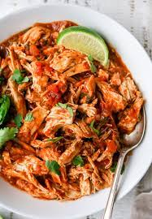

Crockpot Salsa Chicken

This easy-to-make meal will be an instant family favorite.
The simple recipe makes this an easy meal to whip up during your busy work week.
Give it a shot and let me know what you think in the comments below!
Ingredients
- 4-6 chicken breasts
- 12oz red salsa
- 12oz avocado salsa
- shredded cheese
- cilantro
- lime
How to make it
- Place chicken breasts into crockpot
- Pour both salsas into crockpot and stir
- Cook on either high for 4-5 hours, or low for 6-8 hours, stirring occasionally
- Shred chicken once ready
- For garnish, add shredded cheese, squeeze of lime, and cilantro
- Enjoy!